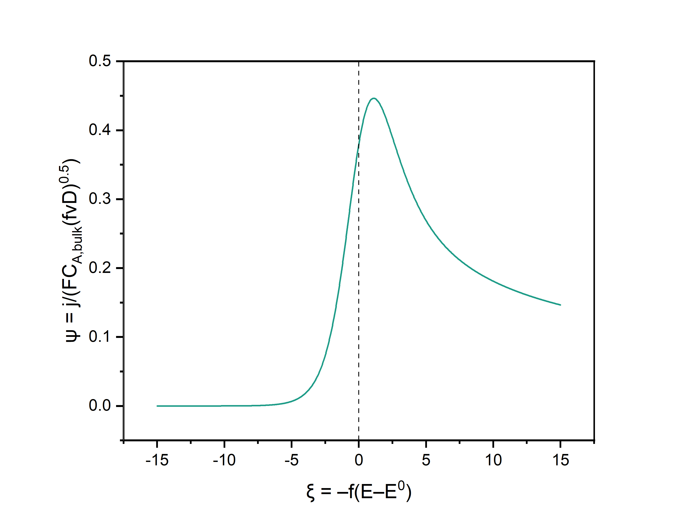
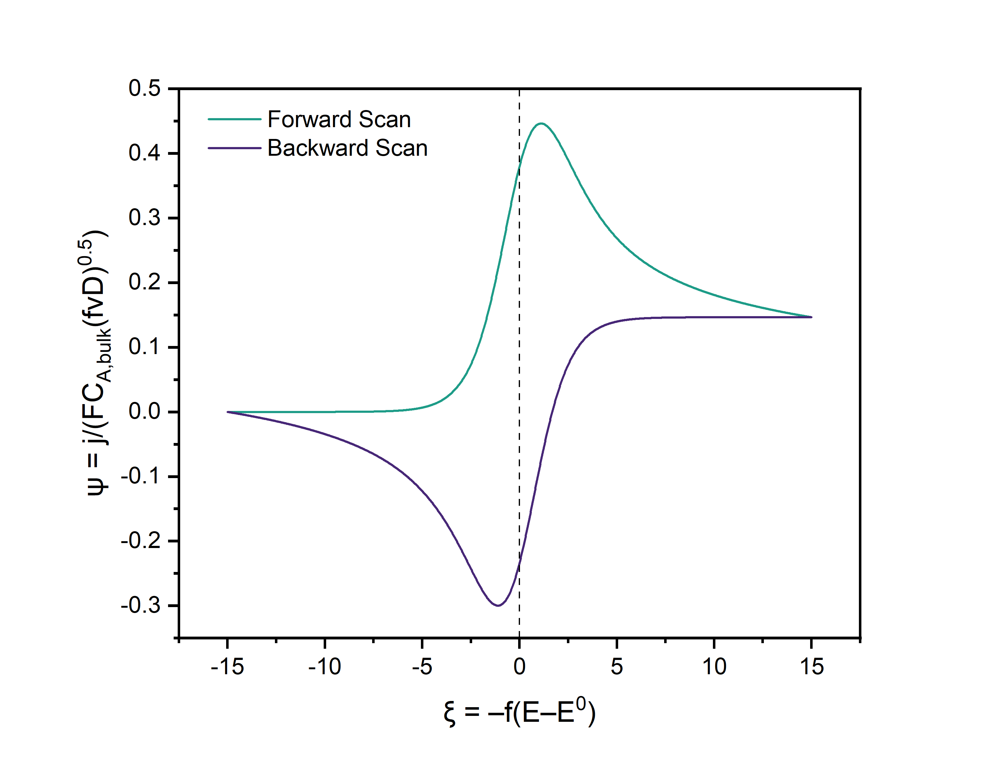
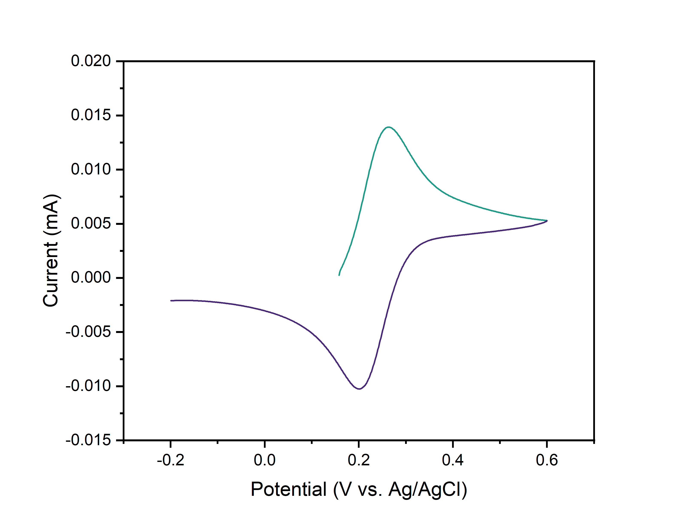
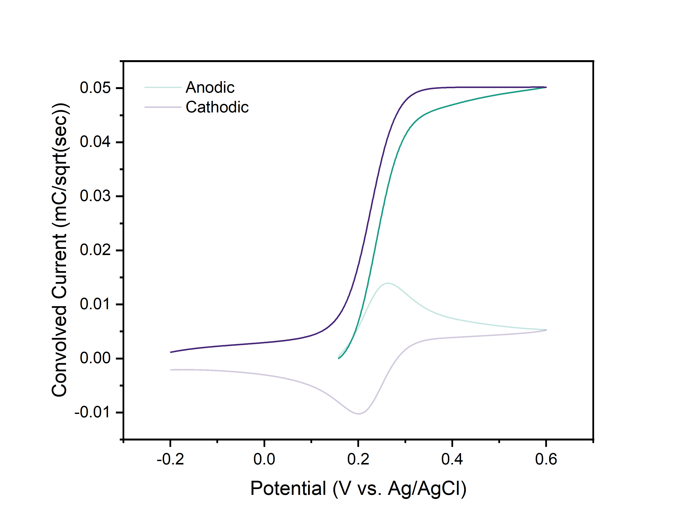

Electrochemistry notes
Why do voltammograms look like that?
Cyclic voltammetry (CV) is the lynchpin of electroanalysis, in which the electrode potential is swept to a switching potential and back. The recorded current, plotted against potential, yields the characteristic duck-shaped trace familiar to every electrochemist. Nearly everything about the electrochemical reaction is encoded in the nuances of that waveform: the rate of mass transport to the electrode, the kinetics of heterogeneous electron transfer, and even the very sequence of electron-transfer and homogeneous chemical steps. Yet the waveform is rarely derived from first principles. Why does the current rise, peak, and then decay? And why does the reverse scan mirror the forward one?
This note derives the equations for the forward and reverse scan of a single reversible electron transfer limited by diffusion. Fundamental properties such as peak height, peak position, and the canonical 57 mV peak separation follow directly from semi-infinite diffusion and Nernstian electron transfer. The rise and fall of the current reflects a competition between two processes. Nernstian electron transfer converts an increasing fraction of reactant at the electrode surface as the potential is swept past the standard potential, while semi-infinite diffusion replenishes reactant across a depletion layer that grows with time. Meanwhile, the reverse scan mirrors the forward scan because the governing equations are linear in concentration and the Nernstian fractions of reactant and product are mirror images about the standard potential. In effect, the product on the return sweep behaves exactly as the reactant did on the forward sweep, once the decaying forward current is subtracted. Section 1 formalizes the foregoing arguments, yielding the Randles–Ševčík equation. Then, a notable insight falls out in Section 2: the current in this transient technique is related, through a convolution, to the steady-state currents measured at rotating disk electrodes (RDEs) and ultramicroelectrodes (UMEs).
A key fact to remember through this derivation is that a product in Laplace space is a convolution in real space. The convolution theorem is what ties the surface concentrations of oxidant and reductant to the convolution of the current $i$ with $(\pi t)^{-0.5}$, and in turn the CV to the RDE. Overall, the derivation streamlines material from Bard and Faulkner and from Savéant and Costentin. I wrote this up in grad school after many hours poring over those textbooks – I hope it saves you the trouble, enjoy!
1. Cyclic Voltammetry of Nernstian Systems: Single-Electron Transfer
Consider a redox couple that undergoes single outer-sphere† electron transfer:
Examples of species A include ferricyanide, ferrocenium, and hexaammineruthenium(III). Let's assume that our concentration of supporting electrolyte is more than 100 times that of the analyte (such that we mitigate electromigration of the analyte) and are using a scan rate $>$ several mV/s (such that we avoid natural convection). Then the Nernst-Planck equation can be approximated with Fick's Law (Bard and Faulkner, Section 4.1, for the Nernst-Planck equation). We assume that we're using a planar electrode of characteristic size $>>$ the diffusion layer thickness. Since the latter is on the order of microns, the electrode should roughly be on the order of millimeters. The use of a “large” electrode lets us assume 1D linear diffusion. Lastly, the electrode is immersed in a large reservoir of electrolyte ($>$ several mL). We use the older polarographic convention for the derivation, to stay consistent with how these equations were originally derived. In this convention, cathodic currents are positive, and cathodic potentials are plotted to the right of the standard potential.
1.1 Dimensional Governing Equations for Forward (Reductive) Scan
The governing equations for our system are Fick's second law applied to species $A$ and $B$:
Where $D$ is the diffusion coefficient for species $A$ and $B$ (assumed to be the same for both species). Note that $D$ contains information on the activity coefficient for species $A$ and $B$. We don't necessarily assume that the activity coefficient is unity, we just assume that it is constant within the diffusion layer. From conservation of flux at the electrode surface, we have:
Meanwhile, the Nernst equation and Faraday's law give, respectively:
Note that the electrode potential varies with time. We start with a reductive scan, and then at time $t_s$ we hit the switching potential and reverse the direction of the scan to drive oxidation.
| Variable | Meaning | Variable | Meaning |
|---|---|---|---|
| $c_A$ | Concentration of species $A$ | $c_B$ | Concentration of species $B$ |
| $x$ | Distance from electrode surface | $D_A = D_B = D$ | Diffusion coefficient |
| $t$ | Time elapsed in the CV | $f = F/RT$ | Inverted thermal voltage |
| $E$ | Working electrode potential | $E^{0}$ | Standard potential of the redox pair $A/B$ (unity activity coefficients) |
| $i$ | Current, cathodic positive (plots in Section 2.2 use the IUPAC convention) | $j$ | Current density |
| $F$ | Faraday constant | $E_i$ | Initial potential |
| $E_s$ | Switching potential | $t_s$ | Time at which scan is reversed |
| $\nu$ | Scan rate | $\eta$ | Integration variable |
1.2 Dimensionless Governing Equations for Forward Scan
We technically don't have to nondimensionalize to solve, but dimensionless equations are helpful in many ways. List of dimensionless variables:
Fick's law applied to species $A$ and $B$ with our dimensionless variables becomes:
Note that $a=1$ and $b=0$ everywhere in the domain $y$ for $\tau = 0$, i.e., before beginning our CV, our analyte is completely in the form of species $A$. Conservation of flux at the electrode surface becomes:
The Nernst equation is:
And since $a+b=1$ at the surface $y=0$, we can use the Nernst equation to find that
We will return to these expressions shortly. Faraday's law gives us the dimensionless current:
1.3 Solving for the Integral Relation of the Current
We can solve Fick's law by taking Laplace transforms relative to $\tau$. The Laplace transform of $a(y,\tau)$ is $\overline{a}(y,s)$. The Laplace transform of Equation 1.17 is:
Applying our initial condition simplifies the equation to:
Playing the same game with Equation 1.18 gives:
We've simplified the problem to solving second-order linear ODEs (relative to $y$ only). The general solutions for $\overline{a}$ and $\overline{b}$ are:
To obey our semi-infinite limit (as $y$ gets large, $\overline{a} = 1/s$ and $\overline{b} = 0$), we set $c_2$ and $c_4$ to $0$:
And from conservation of flux at the surface, we know that $c_3=-c_1$:
Note that by this point in solving Fick's law, we have only invoked the initial condition, semi-infinite condition, and flux balance. Thus, equations 1.31 and 1.32 are general to single-electron transfer with no assumptions made to electrode kinetics or technique. Faraday's law (equation 1.23) in Laplace space relates $c_1$ to the current. I'll show $a$ here since there's an extra term compared to $b$.
Plug $c_1$ into equation 1.31:
The surface concentration $\overline{a}$ is:
We can come back to the original space through inverse Laplace transform.
The integral term follows from the convolution theorem for Laplace transforms:
$\eta$ is a dummy variable that is lost when the definite integral is evaluated. This is one of the key insights from the derivation: the concentrations of $\pmb{A}$ and $\pmb{B}$ at the electrode surface can be related to the convolution product of the current with the function $\pmb{1/\sqrt{\pi t}}$. Playing the same game with $\overline{b}$ gives:
Equations 1.36 and 1.40 still carry no assumption about electrode kinetics or about how the potential varies in time. The reaction need not be Nernstian, and the potential need not even be linearly scanned.
Only now do we assume Nernstian ET. Applying equation 1.22, derived above, to equation 1.40 gives us the current response for the entire voltammogram:
Dimensionless time and potential are of course related, since we're linearly scanning the potential for the experiment
So we can express the current-potential curve of the cathodic (forward) scan as:
As the starting potential is made more and more positive of the standard potential (true in any practical experiment), $u_i$ approaches infinity, and so we can write:
Meanwhile, still using equation 1.41, the reverse scan can be written in two portions:
Where the subscripts $a$ and $c$ denote the anodic (reverse) and cathodic (forward) scans. We can rewrite to play with the bounds of integration:
The leftmost term tends to $1$ as the inversion potential is made far negative of the standard potential (i.e., normalized surface concentration of $B$ tends to $1$), which simplifies Equation 1.47 to:
Again, recasting the bounds with respect to potential rather than time, we have:‡

This is identical to Equation 1.45 after reflection about the y-axis, reflection about the x-axis, and vertical translation by the cathodic baseline. We can thus focus our attention on solving for the cathodic scan, since the anodic scan is easily obtained after. The integral relation of the dimensionless current to the dimensionless potential is a tricky form to solve (different methods of numerical solution were the subject of dozens of papers between the 1940s and 1980s). This integral equation has been solved numerically, and the result for equation 1.45 can be written as the explicit expression
If we plot equation 1.50 (Figure 1), we find that the peak height $\psi_p$ is 0.446, occurring at $\xi_p = 1.11$. In dimensional variables, this means that:
And that is the Randles–Ševčík equation, derived! The peak current is proportional to the concentration of $A$ in solution and proportional to the square root of the scan rate $\nu$. Plotting the reverse scan in addition to the forward scan, we can further find that the distance between anodic and cathodic peak potentials is 2.22 thermal voltages (Figure 2).

1.4 Fick's Law vs. Nernst-Planck
Fick's law is the Nernst-Planck equation with the migration and convection terms neglected. With supporting electrolyte in large excess, the analyte carries a negligible fraction of the ionic current, so its migration can be ignored. The diffusion layer is microns thick while the double layer is nanometers thick, so electroneutrality holds over essentially the entire region we are describing. And in a quiescent solution at scan rates of a few mV/s or more, natural convection does not develop on the timescale of the experiment. For a single outer-sphere electron transfer, diffusion controls the current-potential response. In general, the choice between invoking Fick's law and the Nernst-Planck equation comes down to comparing the concentration, length, and time scales of the analyte with those of its surroundings.
2. Convolution of CVs
2.1 Derivation of Convolutive Manipulation
As we saw in Section 1, the convolution product of the current with the function $1/\sqrt{\pi t}$ naturally falls out from transient linear and semi-infinite diffusion. If we dimensionalize equation 1.36 we have:
Where $i$ is the current and $\eta$ is an integration variable like before. Substituting $\eta = f \nu \eta'$ so that the integration variable is dimensional time, $d\eta = f \nu d\eta'$ and $\sqrt{f \nu t - \eta} = \sqrt{f \nu}\sqrt{t - \eta'}$. The factors of $f \nu$ cancel, leaving
Where $I_1 = FAc_{A, bulk}\sqrt{D}$ is the limiting value of the convolution integral $I$ (defined below), reached when the potential is made so negative that the concentration of $A$ is zero at the electrode surface. Importantly, no assumption about the time dependence of $i$ was needed. We can now express the concentrations of $A$ and $B$ at the electrode surface:
Where the convolution integral $I$ is:
Equation 2.5 is powerful in that it provides a convolution transformation of CV data that leads to a sigmoidal i-E profile as we would normally see at an RDE. Furthermore, equations 2.3 and 2.4 have remarkable similarity to the electrode surface concentrations of $A$ and $B$ that we'd see in RDE voltammetry (RDEV):
Where $i_l$ is the plateau current reached during RDEV at sufficiently negative potentials, which is given by the Levich equation (Bard and Faulkner, Section 9.3.2):
Here $\delta$ is the diffusion layer thickness, $\nu_{kin}$ is the kinematic viscosity (not the scan rate $\nu$), and $\omega_R$ is the angular rotation rate.
2.2 Plotting the Convolved Voltammogram
For this section I'm using a CV of ferrocenemethanol (FcMeOH) on glassy carbon. Note that all plots from here on use the IUPAC convention (anodic currents positive).

For simplicity, the raw data were interpolated to evenly spaced points.§ I then used the following algorithm4 to evaluate the convolution integral (Equation 2.5):
Where, as in equation 2.1, $i$ is the current. The result is shown in Figure 4, where we indeed observe an S-shaped I-E profile as we would normally see in RDE voltammetry (RDEV) or ultramicroelectrode voltammetry (UMEV). Again, this is because the convolved current is related to surface concentrations, thereby allowing us to eliminate the effect of a decreasing concentration gradient.

There are several electroanalytical benefits to working with convolved currents.
- We have transformed data collected from a transient technique into a steady-state response. This affords the benefits of doing a normal CV while getting the benefits of working with a steady-state response.5
- The data are less sensitive to sluggish electron transfer kinetics, such as to an electroactive species in a polymer layer.6
- In some scenarios, RDEs and UMEs are unable to achieve steady-state conditions, such as in highly viscous liquids.7 Doing a standard CV on a macroelectrode is preferred here.
- A priori knowledge of the kinetic rate law is not needed for analysis, unlike in normal CVs. One of the first demonstrations that the transfer coefficient is potential-dependent was done using convolution voltammetry.8
- The data are now much easier to correct for ohmic drop.9
Let's return to the two questions we started with! The current rises as Nernstian electron transfer converts more and more of the reactant at the surface. The current then peaks and decays because diffusion cannot resupply the surface fast enough across a growing depletion layer. Meanwhile, the reverse scan mirrors the forward scan because only the direction of the sweep and the identity of the reactant have changed; the diffusion equation is identical for both species, and the Nernst equation is symmetric in reactant and product about the standard potential. Everything else we derived, from the 57 mV peak separation to the sigmoid in Section 2, follows from the interplay of diffusion and Nernstian electron transfer.
Of course, the foregoing derivation covers the ideal case of fast electron transfer and no coupled chemistry. In the regime of slow electron transfer, a rate law replaces the Nernst equation at the surface and the mirror symmetry breaks, though the integral relations in Section 1.3 remain valid as no assumption was made about kinetics. When homogeneous chemistry is coupled to the electron transfer, reactions within the diffusion layer add kinetic terms to Fick's second law and the derivation must start over from the governing equations. The waveform is then governed by the ratio of reaction rate to diffusion rate, giving rise to a kinetic zone diagram (e.g., Figure 3 of Rountree et al.). For a worked example of an ECEC mechanism (alternating electron-transfer and chemical steps), derived in the same spirit as this note, see the supporting information of our paper on molecularly catalyzed nitrate reduction.
Footnotes
† Savéant defines inner-sphere electron transfer (ET) in the classical sense, in which ET is concerted with the breaking or formation of bonds.1 Bard and Faulkner define inner-sphere ET as involving “a strong interaction” of reactant or product with the electrode surface.2 Outer-sphere ET exhibits the opposite behavior: reactants, intermediates, and products do not interact strongly with the electrode surface, ET proceeds by tunneling across at least a monolayer of solvent, and the nuclear skeleton is unchanged. ↩
‡ Appendix 7.1.2 of Savéant and Costentin3 prints this equation with the limits running from $\infty$ to $\xi_a$ and $\sqrt{\xi_a - \eta}$ in the denominator. Because $\xi_a$ decreases with time on the reverse scan, the change of variable gives $\tau - \eta = \eta' - \xi_a$ and $d\eta = -d\eta'$, so the limits swap and the quantity under the root changes sign, as written here. ↩
§ It's easier to convolve evenly spaced data. Whether interpolation is acceptable depends on the resolution of the data you originally collected and the level of error you consider acceptable due to the interpolation. CVs are collected with a relatively high frequency of data sampling, so interpolation introduces negligible error for the illustration here. ↩
References
- Savéant, J.-M.; Costentin, C. Elements of Molecular and Biomolecular Electrochemistry: An Electrochemical Approach to Electron Transfer Chemistry, 2nd ed.; Wiley: Hoboken, NJ, 2019; p 1 (Section 1.1).
- Bard, A. J.; Faulkner, L. R. Electrochemical Methods: Fundamentals and Applications, 2nd ed.; Wiley: New York, 2001; p 116 (Section 3.6). See also Bard, A. J. Inner-Sphere Heterogeneous Electrode Reactions. Electrocatalysis and Photocatalysis: The Challenge. J. Am. Chem. Soc. 2010, 132, 7559–7567. DOI: 10.1021/ja101578m
- Ref 1, p 443 (Appendix 7.1.2); ref 2, p 177 (Section 5.4).
- Ref 2, p 249 (Section 6.7).
- Bentley, C. L.; Bond, A. M.; Hollenkamp, A. F.; Mahon, P. J.; Zhang, J. Applications of Convolution Voltammetry in Electroanalytical Chemistry. Anal. Chem. 2014, 86, 2073–2081. DOI: 10.1021/ac4036422
- Leddy, J.; Bard, A. J. Polymer Films on Electrodes. Part XII. Chronoamperometric and Rotating Disk Electrode Determination of the Mechanism of Mass Transport through Poly(vinyl ferrocene) Films. J. Electroanal. Chem. 1985, 189, 203–219. DOI: 10.1016/0368-1874(85)80068-X
- Bentley, C. L.; Bond, A. M.; Hollenkamp, A. F.; Mahon, P. J.; Zhang, J. Advantages Available in the Application of the Semi-Integral Electroanalysis Technique for the Determination of Diffusion Coefficients in the Highly Viscous Ionic Liquid 1-Methyl-3-octylimidazolium Hexafluorophosphate. Anal. Chem. 2013, 85, 2239–2245. DOI: 10.1021/ac303042r
- Savéant, J. M.; Tessier, D. Convolution Potential Sweep Voltammetry. V. Determination of Charge Transfer Kinetics Deviating from the Butler–Volmer Behaviour. J. Electroanal. Chem. 1975, 65, 57–66. DOI: 10.1016/0368-1874(75)85105-7
- Imbeaux, J. C.; Savéant, J. M. Convolutive Potential Sweep Voltammetry. I. Introduction. J. Electroanal. Chem. 1973, 44, 169–187. DOI: 10.1016/S0022-0728(73)80244-X